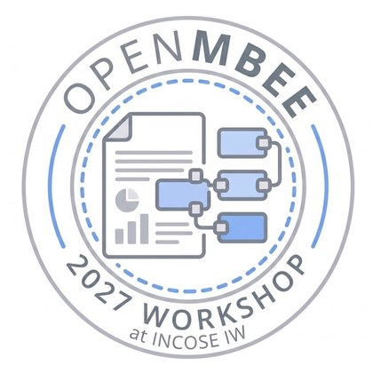

Wed, Feb 3 · 6:30 PM PST
Nicholas LeGrand
Director for Systems Engineering, Office of the Under Secretary of War for Research and Engineering

Leveraging Open Source in Systems Engineering
February 3 – 5, 2027 at Caltech, Pasadena, California
The 2027 workshop centers on SysML v2 as a new capability for enabling Open Source Systems Engineering. Talks, demos, and modeling activities will cover:
Wed, Feb 3 · 6:30 PM PST
Director for Systems Engineering, Office of the Under Secretary of War for Research and Engineering
Thu, Feb 4 · 9:15 AM
Model Driven Solutions · OMG SysML v2 co-lead
Fri, Feb 5 · 9:15 AM
Systems Engineering Technical Lead, Los Alamos National Labs
Keynotes and community activities are confirmed below. For the evolving agenda—including technical sessions, demos, and talks—follow the workshop wiki links in each tile.
Feb 3
Wednesday
Starts 6:00 PM PST
Welcome reception at JPL Van Karman, followed by an opening keynote from Nicholas LeGrand.
Reception
JPL Van Karman
Keynote: Nicholas LeGrand
JPL Van Karman
Additional reception details to be announced.
View the full agenda on the wiki →Feb 4
Thursday
Starts 9:00 AM
Ed Seidewitz explores the story behind SysML v2’s open-source implementation, followed by Open Space and the hackathon kickoff.
Keynote: Ed Seidewitz
The Story Behind SysML v2’s Open-Source Implementation
Open Space & hackathon kickoff
Participant-driven discussion and hands-on activity
Open Space community activity
Community-led topics, discussions, and outbrief
Additional technical sessions to be announced.
View the full agenda on the wiki →Feb 5
Friday
Starts 9:00 AM
Adam Wade’s systems-thinking leadership keynote leads into a Fishbowl discussion, hackathon outbrief, and wrap-up.
Keynote: Adam Wade
The Integrator, Not the Expert: From Oppenheimer to Digital Engineering
Fishbowl community activity
An open, interactive community discussion
Hackathon outbrief & wrap-up
Community outcomes and closing session
Additional technical sessions to be announced.
View the full agenda on the wiki →The workshop follows INCOSE IW 2027 (Jan 30 – Feb 2, Torrance, CA). Plan to attend both and continue the conversation at Caltech.